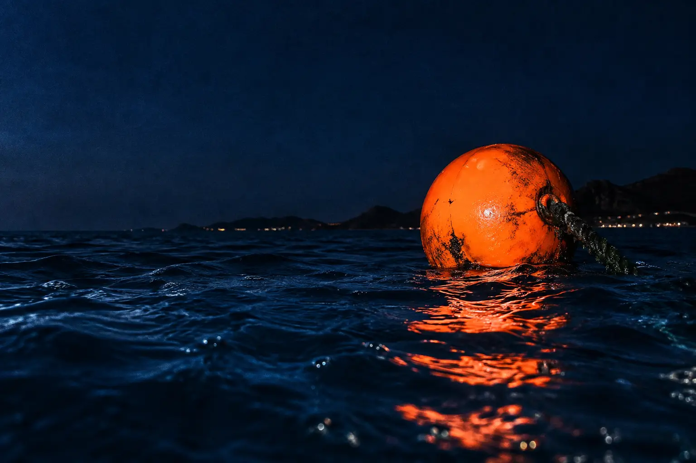
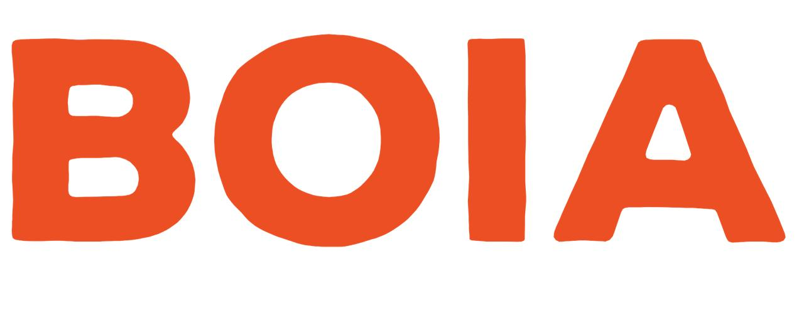
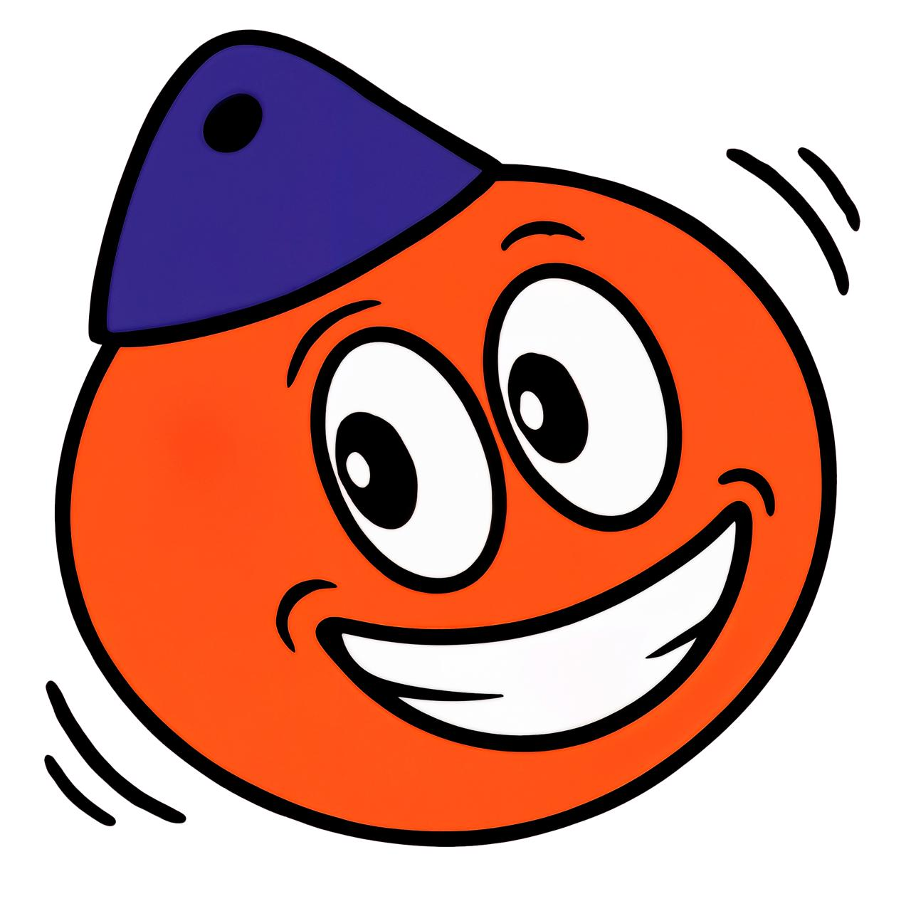

INDEPENDENT SOUNDS.
UNEXPECTED CONNECTIONS.EST. IN THE MEDITERRANEAN
CONNECTED EVERYWHERE.
UNEXPECTED CONNECTIONS.EST. IN THE MEDITERRANEAN
CONNECTED EVERYWHERE.

UNDERGROUND MUSIC FESTIVAL
01 / MANIFESTOFOLLOW THE SIGNAL

02 / ARCHIVE
03 / SELECTORS & LIVE ACTS
04 / BEYOND THE DANCEFLOORCOME FOR THE MUSIC. STAY FOR EVERYTHING.
SELECTORS
05 / VISUAL DIARY
BOIA / FILM 001
06 / SOMEWHERE OFF THE MAP—° —′ —″ N / —° —′ —″ E
SECRET
LOCATION.
⊕
07 / NEXT SIGNAL